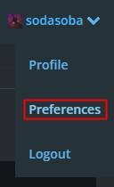
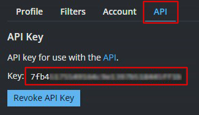
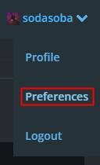
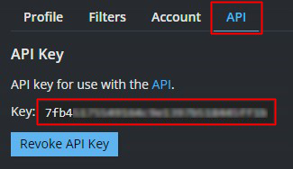

SteamGridDB API
in your steamgriddb.com account click on Preferences

Click on the API Tab and copy the api key

This key is used for NX-GiC & Icon Grabber
in your steamgriddb.com account click on Preferences

Click on the API Tab and copy the api key

This key is used for NX-GiC & Icon Grabber